Crochet Products
-
Crochet Animals
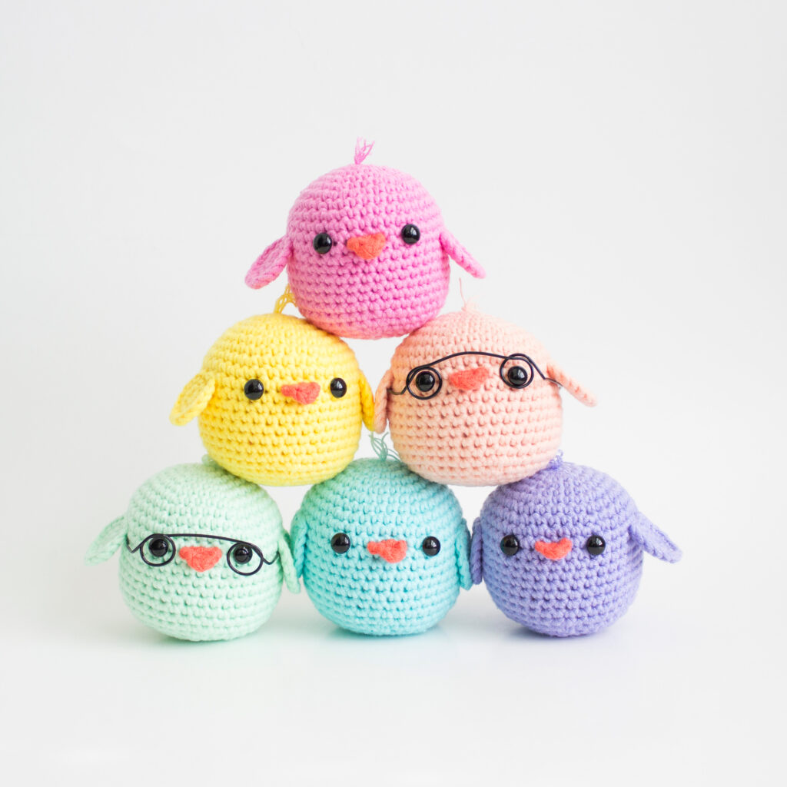 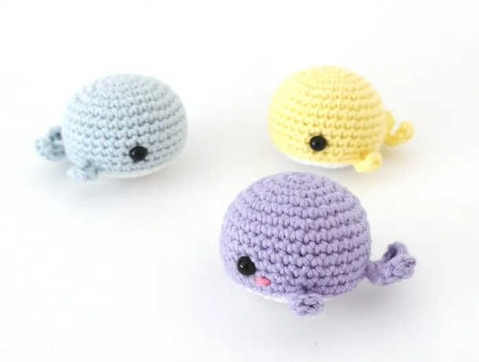
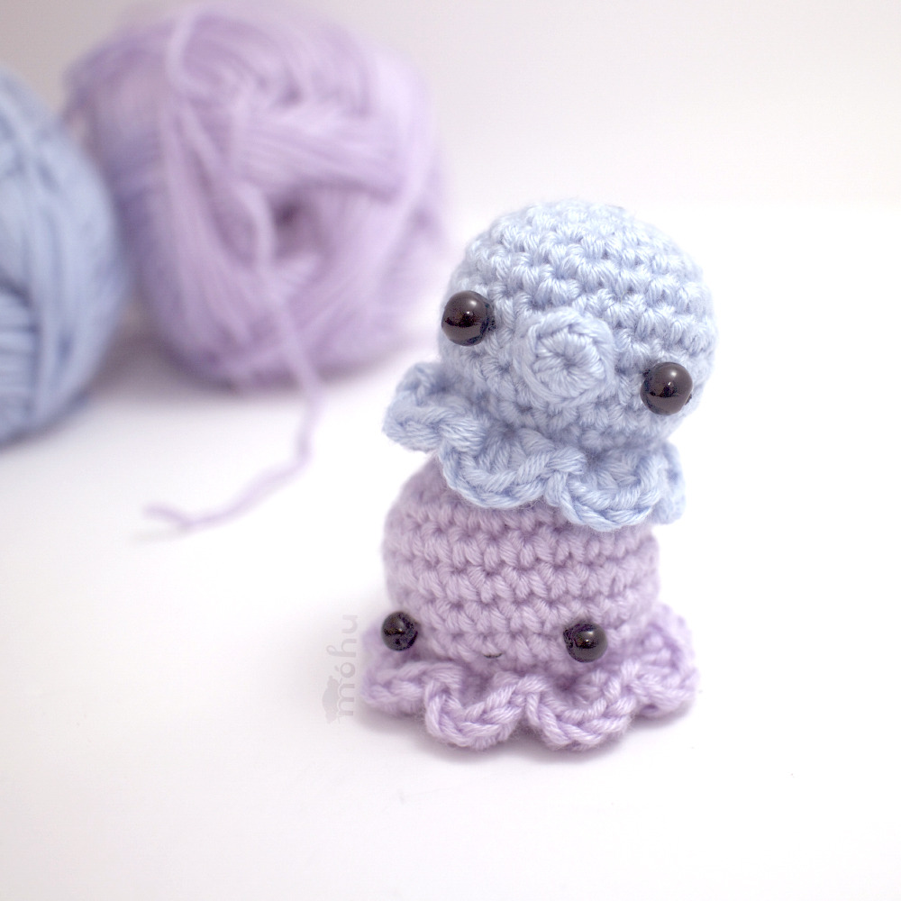
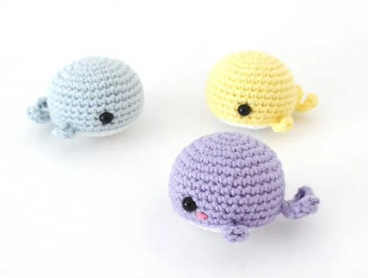
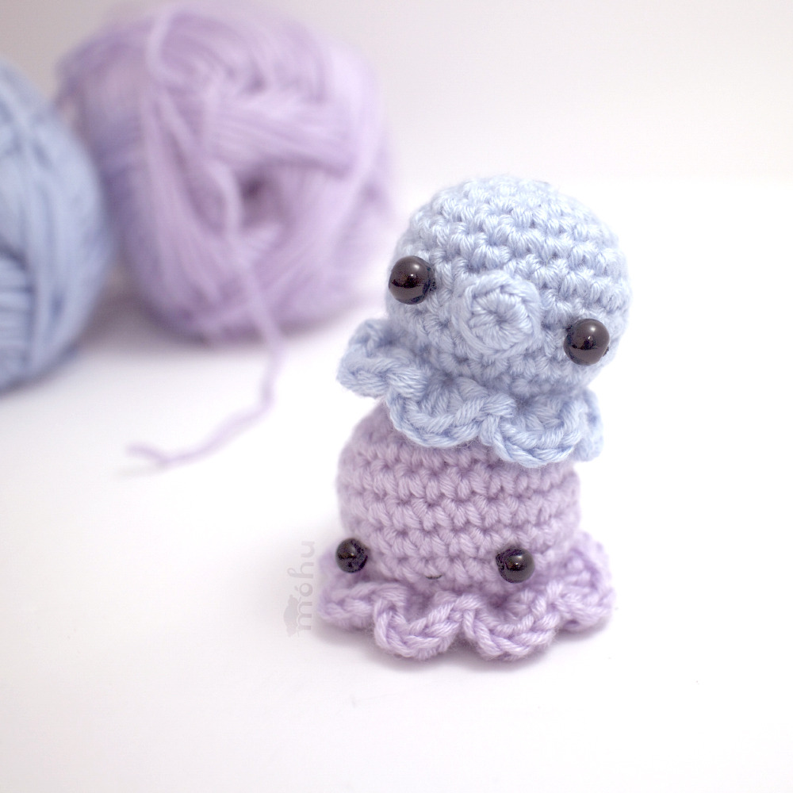
-
Crochet Wearables
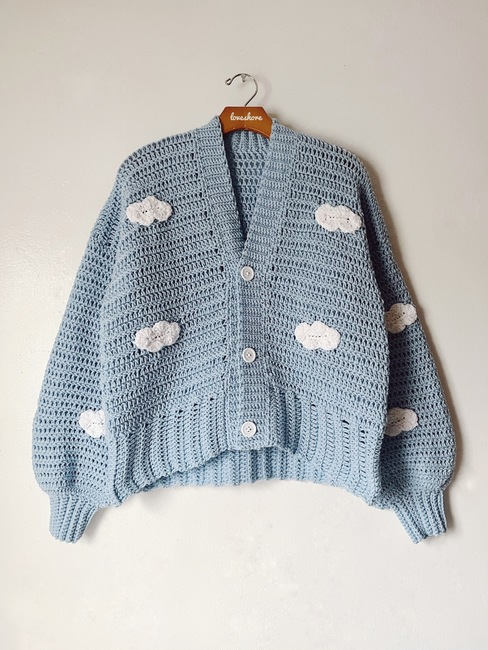 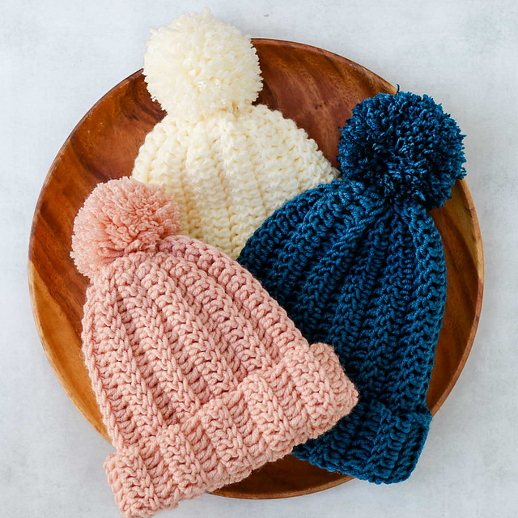 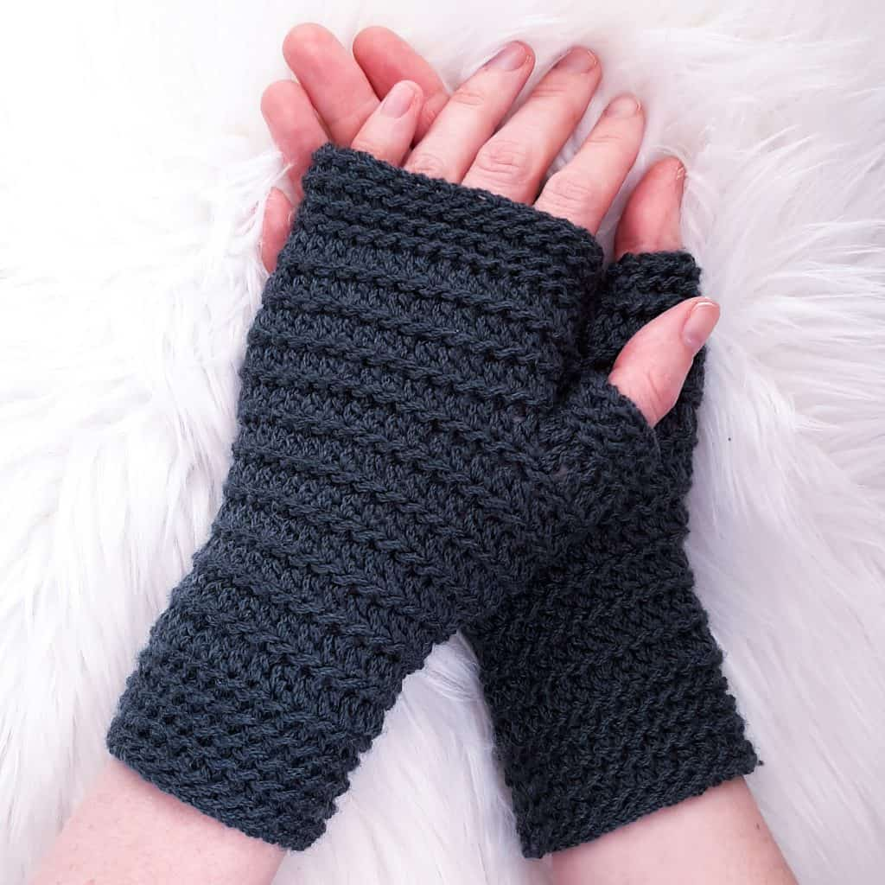 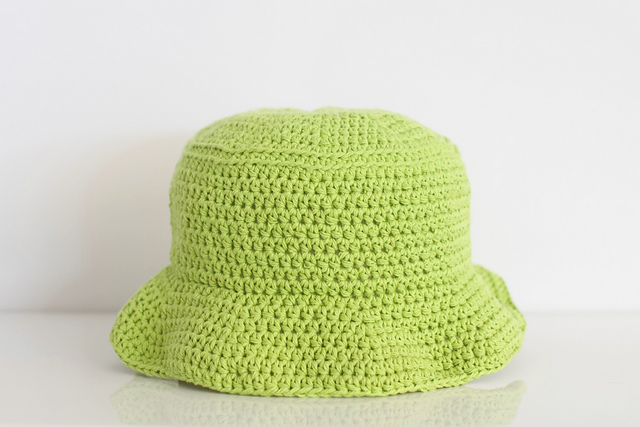 -
Another Crochet Products
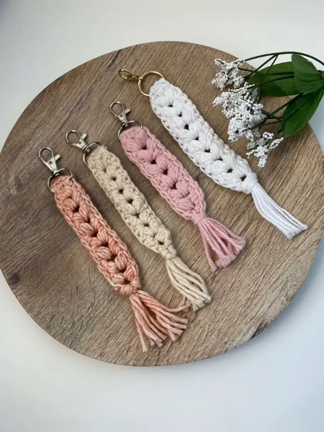 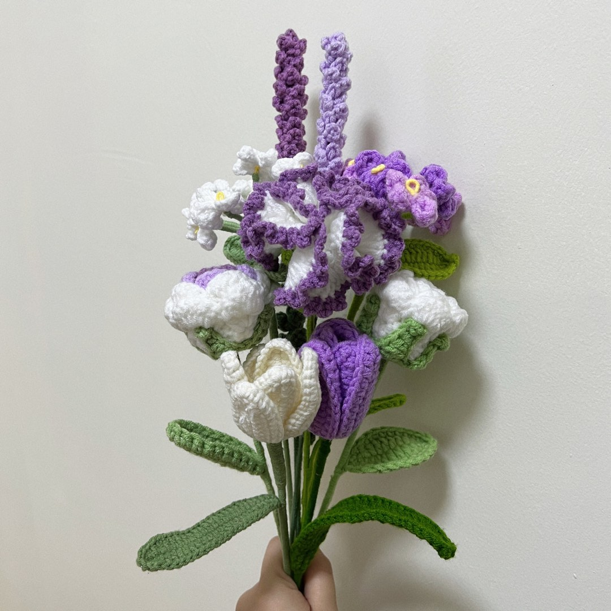 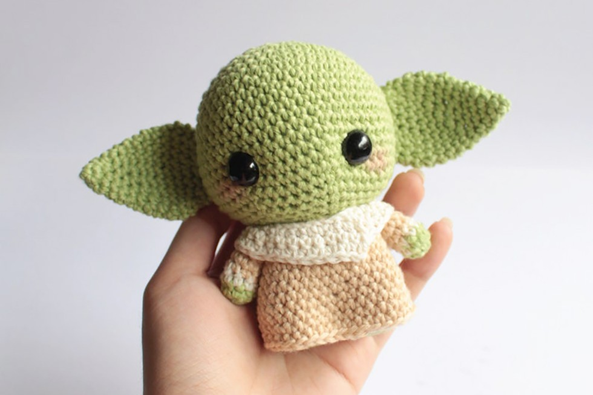
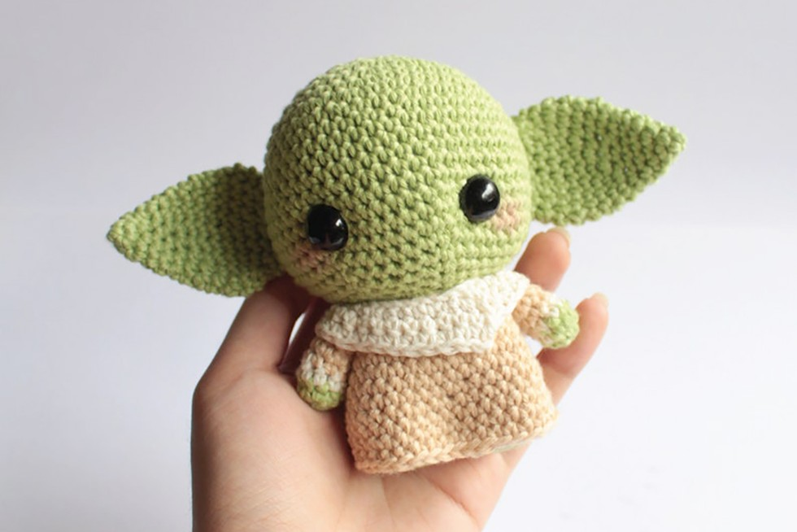
Equipments needed to start crochet
-
Yarn
Yarn comes in many different weights: from super-fine baby weight yarn all the way up to bulky-weight wool. Different patterns will recommend various types of yarns. But for beginners, I recommend using medium-weight (number four) acrylic, wool, or cotton yarn. You can buy this type of yarn online, or at any craft store!
-
Crochet Hook
Crochet hooks come in a range of sizes, shapes, and materials. The most important thing to remember is to match the size of the hook to the weight of the yarn. Use larger crochet hooks with thicker yarns and smaller crochet hooks with thinner yarns. For beginners, I recommend starting with an ergonomic hook in a medium size - like G6 (4.25 mm) or H8 (5.00 mm). If you aren't sure what the right size crochet hook is for your yarn, check the back of the yarn label. It will suggest an appropriate hook size for your specific yarn.
-
Other Supplies
If you want to grab a few more items, you could also pick up:
- yarn needle or tapestry needle
- stitch markers
- sharp scissors
Tutorial crochet video for beginners
Thankyou for your feedback
Thankyou for registering for the workshop